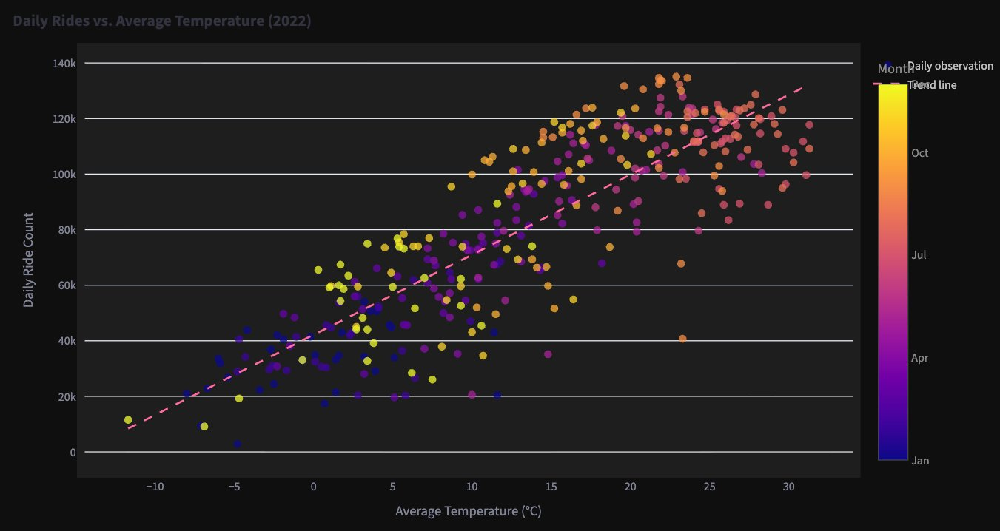

Datenquelle: NYC Citi Bike Systemdaten (2022) — 12 monatliche ZIP-Dateien, ~1,7 Millionen einzelne Fahrtdatensätze
Wetterdaten: NOAA GHCND Daily Summaries, Station USW00014732 (Flughafen LaGuardia) — über API abgerufen (TAVG, TMIN, TMAX, PRCP)
Ergebnis: Vollständig deploytes mehrseitiges Streamlit-Dashboard zu Saisontrends, Temperaturkorrelation, Stationsnachfrage und räumlichen Fahrtclustern
Citi Bike erzeugt jedes Jahr Millionen von Fahrtdatensätzen — doch rohe Fahrtprotokolle sagen Betriebsteams nicht, wann sie das Angebot skalieren, welche Stationen priorisiert werden sollen oder wie sie saisonale Schwankungen planen können. Dieses Projekt überbrückt diese Lücke: 1,7 Millionen Einzelfahrten werden mit NOAA-Wetterdaten vom Flughafen LaGuardia zusammengeführt und in ein interaktives, deployetes Dashboard für operative Entscheidungen umgewandelt.
Geschäftsfrage: Wie sollte Citi Bike Fahrradangebot und Umverteilungsoperationen über das Jahr skalieren — und welche Stationen, Jahreszeiten und Umweltfaktoren treiben diese Entscheidung?
| Schritt | Notebook | Aktion |
|---|---|---|
| 1. Abrufen | citi_bike_weather_2022 | 12 monatliche Citi-Bike-ZIP-Dateien + NOAA-API-Wetterdaten per Paginierung heruntergeladen |
| 2. Extrahieren | citi_bike_weather_2022 | ZIP-Dateien mit Pythons zipfile-Modul entpackt; alle 12 CSVs mit Generator in pd.concat() zusammengeführt |
| 3. Bereinigen | citi_bike_weather_2022 | Zeitstempel geparst, auf 2022 gefiltert, ungültige Datumsangaben entfernt, NOAA lang→breit mit pivot() umgeformt |
| 4. Aggregieren | citi_bike_weather_2022 | 1,7 Mio. Fahrtzeilen zu täglichen Fahrtanzahlen gruppiert; Stationsdaten für Top-10-Ranking aggregiert |
| 5. Zusammenführen | citi_bike_weather_2022 | Inner Join: tägliche Fahrtanzahlen mit NOAA-Wetter über Datumsschlüssel → citibike_2022_daily_with_weather.csv |
| 6. Visualisieren | exercise_2_3 / exercise_2_4 | Matplotlib und Seaborn EDA: Zeitreihen, Doppelachsendiagramm, Streudiagramm, Verteilungen |
| 7. Geospatial | exercise_2_5 | Kepler.gl Fahrt-Ursprungskarte — räumliche Clusteranalyse der Nachfrage 2022 |
| 8. Dashboard | exercise_2_6 | 6-seitige Streamlit-App mit Plotly-Charts, Sidebar-Navigation, gecachtem Datenladen |
| 9. Deployen | app_part_2.py | Auf Streamlit Cloud deployt — live unter dem Link unten |
Die durchschnittlichen täglichen Fahrten folgen 2022 einem klaren saisonalen Muster. Die Nutzung steigt von einem Januartief von rund 33.000 Fahrten/Tag, erreicht im Spätsommer einen Höchstwert von etwa 115.000 Fahrten/Tag und fällt dann steil ab. Der Unterschied zwischen Spitze und Tief entspricht einem Faktor von über 3.
Wichtige Erkenntnis — Saisonale Skalierungsbasis: Die Winternachfrage (Nov–Apr) entspricht etwa 50% der Sommernachfrage (Jun–Aug). Dies quantifiziert direkt, um wie viel die Umverteilungsintensität und Personalbesetzung im Winter reduziert werden können.
Die Überlagerung von täglichen Fahrtanzahlen mit der NOAA-Durchschnittstemperatur zeigt, dass beide Signale sich über das gesamte Jahr eng verfolgen. Kälteeinbrüche führen zu starken Einbrüchen; warme Phasen treiben die Zahlen in Richtung saisonaler Höchstwerte.


Wichtige Erkenntnis — Wetterbasierte Betriebsplanung: Temperatur ist ein zuverlässiges Vorwarnsignal. Die Integration von NOAA-Tagesvorhersagen in die Versorgungsplanung ermöglicht es, Nachfragespitzen proaktiv zu antizipieren statt reaktiv zu reagieren.
Ein Generator-Ausdruck innerhalb von pd.concat() vermeidet den Aufbau einer Liste von 12 vollständigen DataFrames im Speicher. Jede Datei wird gelesen, hinzugefügt und freigegeben, bevor die nächste geladen wird:
csv_files = [ os.path.join(monthly_folder, f) for f in os.listdir(monthly_folder) if f.lower().endswith(".csv")
] citibike_df = pd.concat( (pd.read_csv(file, low_memory=False) for file in csv_files), ignore_index=True
) Alle 10 umsatzstärksten Startstationen 2022 befinden sich in Midtown Manhattan. Die Nr.-1-Station — W 21 St & 6 Ave — verzeichnete 128.436 Fahrtbeginne. Die Top-3 überschritten je 100.000 Fahrten.

Wichtige Erkenntnis — Prioritäre Umverteilungsziele: Diese 10 Stationen sind die risikoreichsten Punkte im System für leere Docks oder nicht verfügbare Fahrräder. Sie benötigen häufigere Umverteilungszyklen, höhere Dock-Kapazität und proaktive Frühmorgen-Befüllung vor den Stomußzeiten.
Monatliche Durchschnittswerte zeigen einen 3-fachen Spread zwischen Spitze (August, ~115.000/Tag) und Tief (Januar, ~33.000/Tag). Dies quantifiziert direkt die saisonale Skalierungsmöglichkeit für Angebots- und Personalentscheidungen.
Tägliche Fahrten folgen der Durchschnittstemperatur über das gesamte Jahr eng. Das Streudiagramm bestätigt einen starken positiven Trend. NOAA-Vorhersagen könnten als Vorwarnsignal operationalisiert werden.
Die führende Station (W 21 St & 6 Ave) generierte 128.436 Fahrtbeginne 2022. Alle Top-10 befinden sich in einem engen Manhattaner Korridor — hohe Priorität für erhöhte Dock-Kapazität und Umverteilungsfrequenz.
Die Kepler.gl-Karte zeigt dichte Cluster im Geschäftsviertel Manhattans und am Hudson-Ufer, mit sekundären Clustern in Brooklyn — Bewegungskorridore sichtbar, die in stationären Aggregaten unsichtbar sind.
12 CSVs naiv zu laden würde den Speicherbedarf verdoppeln. Ein Generator-Ausdruck innerhalb von pd.concat() streamt jede Datei sequenziell — wesentlich für großskalige lokale Datenarbeit ohne Datenbank.
Das vollständige Dashboard ist live auf Streamlit Cloud deployt. Alle Notebooks, App-Code und der zusammengeführte Datensatz sind auf GitHub verfügbar.
▶ Live Streamlit-Dashboard ↓ Vollständige Fallstudie herunterladen (PDF) </> GitHub-Repository